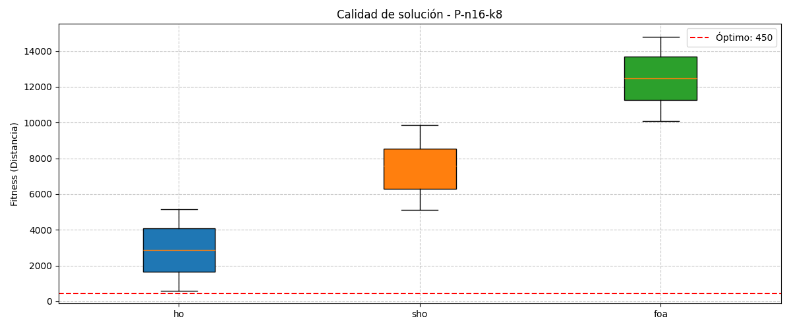
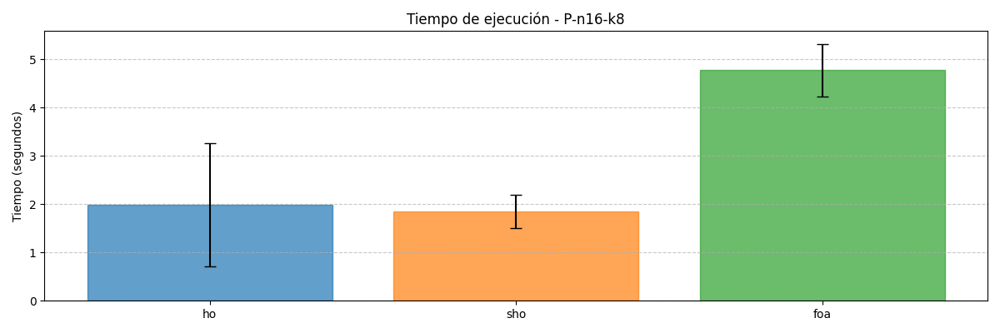
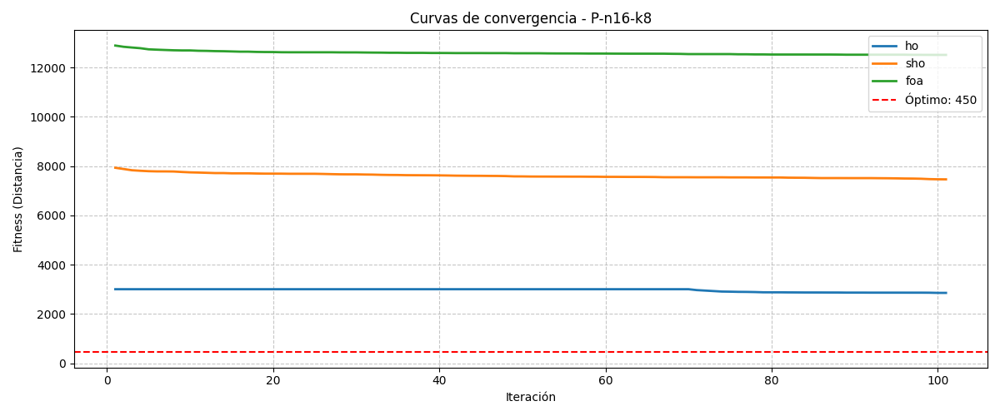
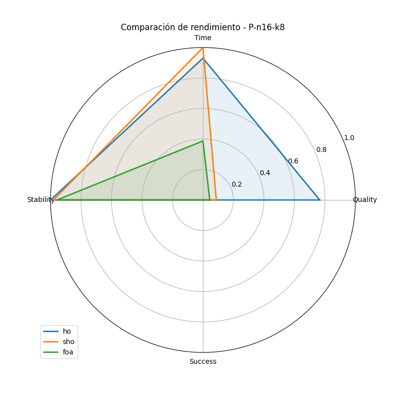

Generated on: 2025-07-11 21:27:57
| Instance | Algorithm | Best | Mean | Time (s) | Gap (%) | Success (%) |
|---|---|---|---|---|---|---|
| P-n16-k8 | ho | 587.47 | 2855.63 ± 1385.92 | 1.99 ± 1.28 | 30.55 | 0.00 |
| P-n16-k8 | sho | 5126.68 | 7462.26 ± 1412.55 | 1.85 ± 0.34 | 1039.26 | 0.00 |
| P-n16-k8 | foa | 10090.92 | 12511.76 ± 1447.29 | 4.77 ± 0.55 | 2142.43 | 0.00 |
Optimal value: 450




Friedman Test
| Statistic | p-value | Interpretation |
|---|---|---|
| 60.0000 | 0.0000 | Significant differences exist |
Post-hoc Wilcoxon Signed-Rank Tests
| Algorithm A | Algorithm B | p-value | Interpretation |
|---|---|---|---|
| ho | sho | 0.0000 | Significant difference |
| ho | foa | 0.0000 | Significant difference |
| sho | foa | 0.0000 | Significant difference |